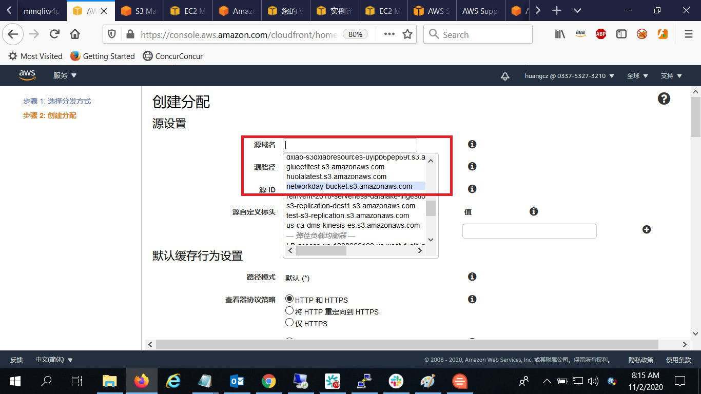
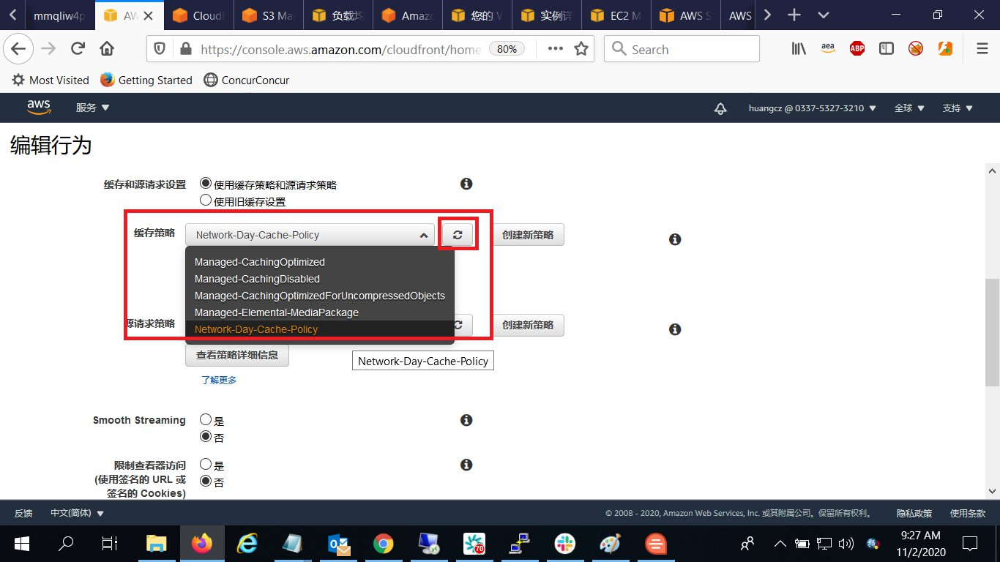
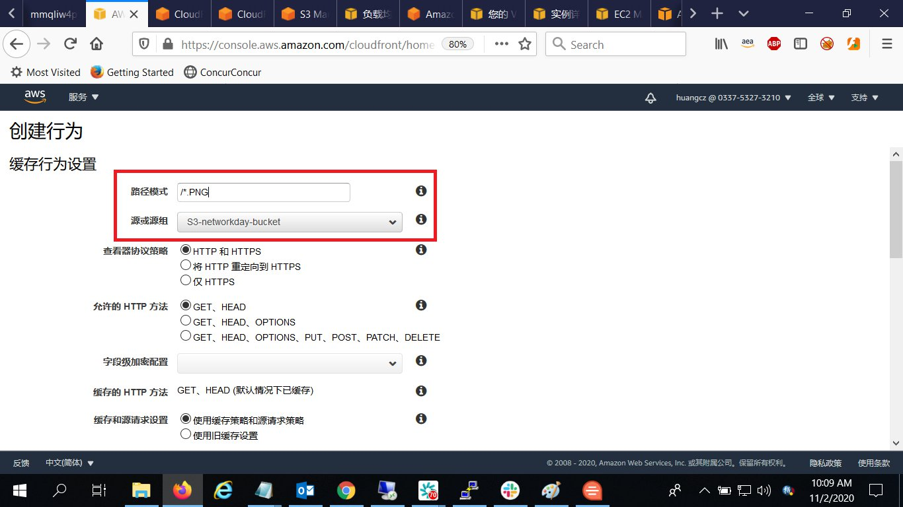

02-配置静态和动态加速
请确保操作的区域是 AWS新加坡区域（ap-southeast-1）。
创建Cloudfront分配
登录到AWS Console，打开Cloudfront服务：
Cloudfront分配中，点击创建分配：
在选择内容分发方式上选择Web，点击入门按钮：
在源设置的源域名中，选择上面创建的S3存储桶的域名： 
注意选择下列设置：
其他选项保持默认，点击创建分配按钮：
等待分配状态变为已部署（大概需要 5-15 分钟）：
验证分配设置：在浏览器中输入上述分配的域名 http://xxxx.cloudfront.net/powered-by-aws-white.png ，验证是否能在浏览器中出现对应的图片
点击进入创建的分配，选择源和源组，点击创建源：
在源域名中选择Lab1中创建的负载均衡器：
选择源协议策略：
点击创建：
创建Cloudfront行为和缓存/回源策略
进入创建好的分配，选择行为，勾选默认行为，点击编辑：
将默认行为的源或源组从S3更改为Lab1中创建的ALB：
在缓存策略的下拉框中选择Managed-CachingDisabled的缓存策略。
选择创建缓存策略
输入缓存策略的名字，并将TTL全部设置为0（设置为 0 表示不缓存）：
点击创建缓存策略
点击刷新按钮，选择新创建的缓存策略： 
点击创建源请求策略：
输入源请求策略的名字：
并选择将所有的Headers，Cookies，Query strings回源，然后点击创建源请求策略：
点击刷新并选择刚创建的源请求策略：

点击保存更改：
点击创建行为：
路径模式中输入/*.PNG（表示png文件到S3回源，其他的走ALB），并源和源组中选择S3存储桶作为源： 
其他选项保持默认，点击创建：
测试验证
修改Lab1中的db.php，将
<a href="https://aws.amazon.com/what-is-cloud-computing"><img src="powered-by-aws-white.png" style="background-color:black;" alt="Powered by AWS Cloud Computing"></a>
中的
https://aws.amazon.com/what-is-cloud-computing
更改为
http://xxxx.cloudfront.net/powered-by-aws-white.png
然后刷新测试验证即可。
监控
使用了CloudFront加速后的性能
在浏览器中输入输入网站URL https://www.uptrends.com/tools/cdn-performance-check ，并在I want to test输入框输入分配的域名http://xxxx.cloudfront.net/db.php ，点击start test按钮。
未使用CloudFront，直接访问Lab1里面的ALB域名的性能
在浏览器中输入输入网站URL https://www.uptrends.com/tools/cdn-performance-check ，并在I want to test输入框输入分配的域名http://<Lab1里面的ALB域名>/db.php ，点击start test按钮。
也可以查看不同国家和城市的访问测试结果
如下图所示点击某一条测试结果左侧的箭头，展开请求响应的详情
下图红框处可以看到响应被发送到的Cloudfront的边缘站点的编码
~完~